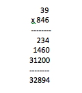
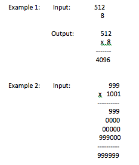

SIENA COLLEGE
28th Annual High School Programming Contest
March 27, 2015
Problem #5: Four-Digit Number Cycler
Background Information: An educational, software company, Maths-R-Us, is in need of a program that will show students the details of the traditional multiplication of positive integers algorithm. Specifically, they want a program that will show the multiplicand, the multiplier, each line obtained from the application of the distributive property, and the final product.
For example, if the multiplicand is 39 and the multiplier is 846 then the following output including the multiplication operator x, the dashed lines, and the place value zeros are required.

Programming Problem:
- Input: Input: A one to four-digit positive integer for the multiplicand and
a one to four-digit positive integer for the multiplier.
- Output: The input values and steps of the traditional multiplication algorithm as described above.

- NOTE: Careful spacing is required. If output does not line up the submission will be judged incorrect.